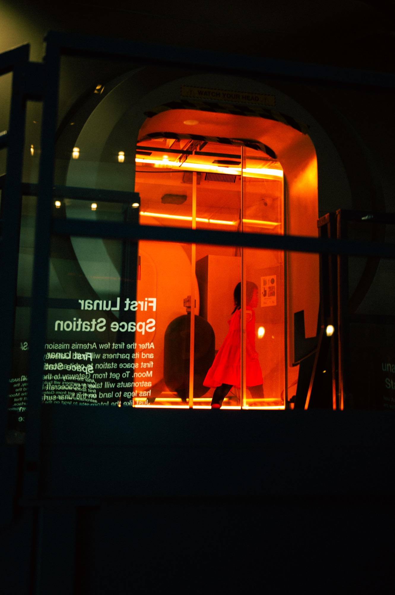
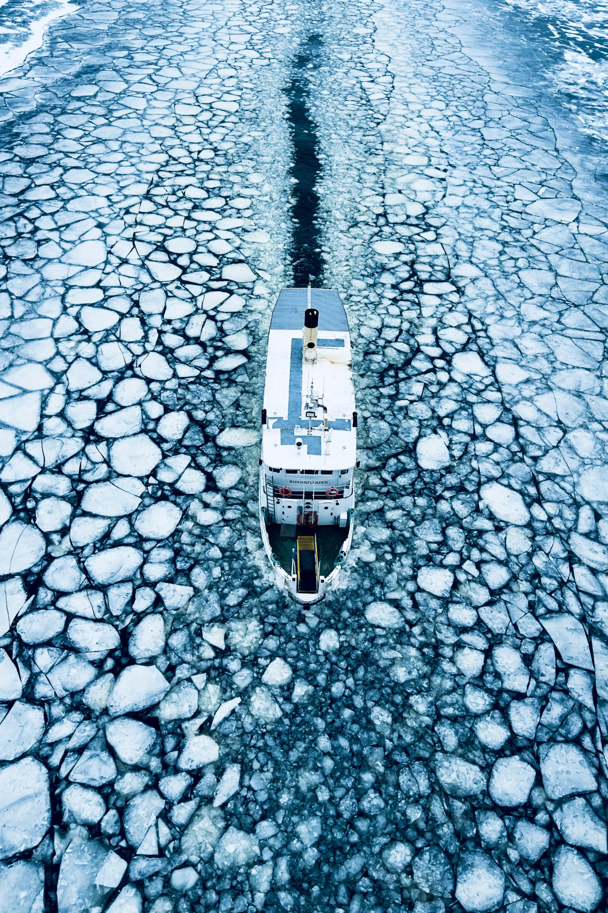
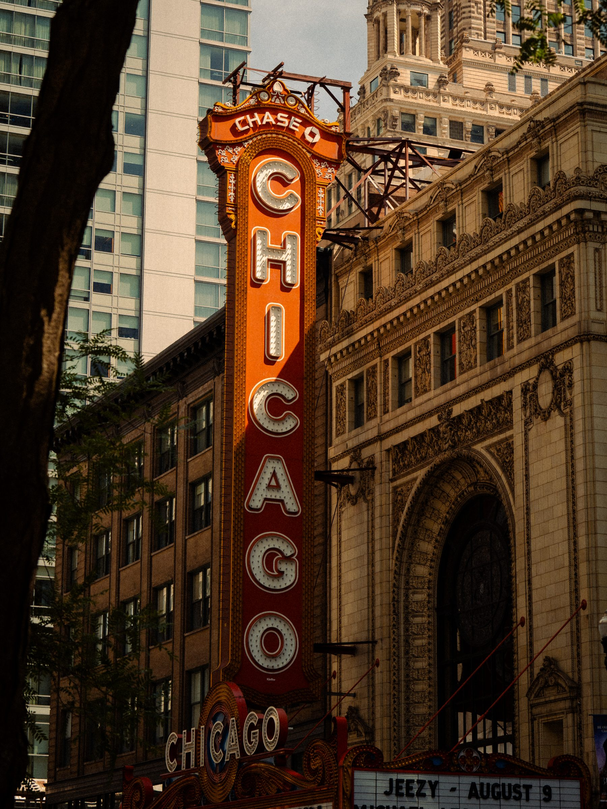
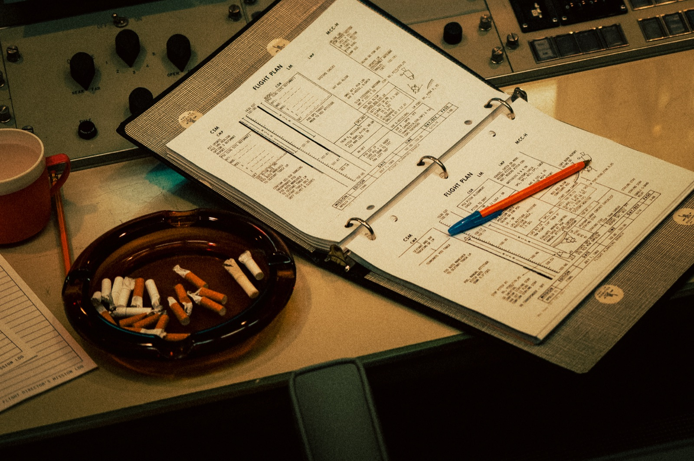
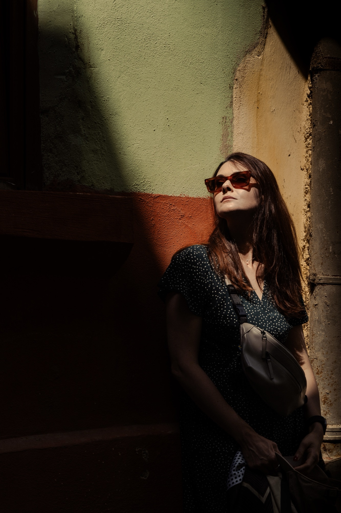
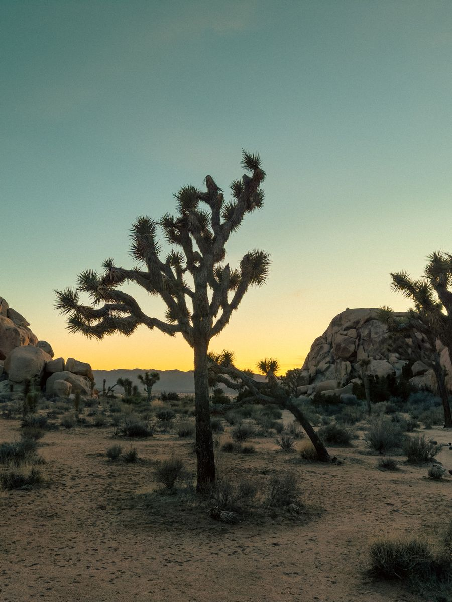
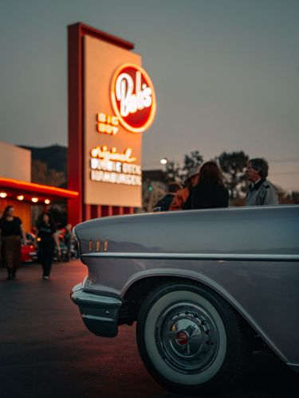
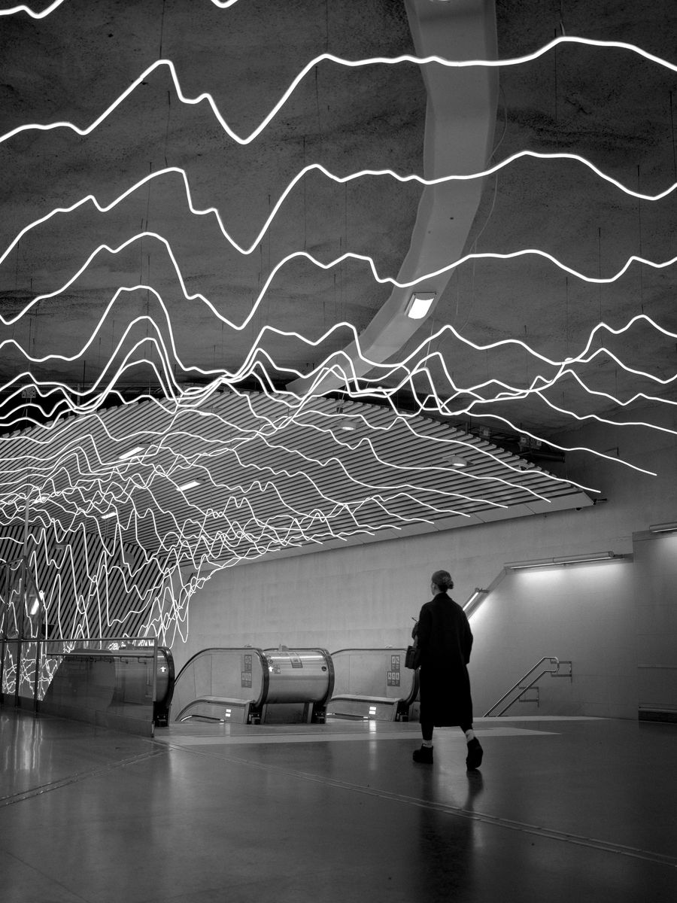

I lead design for 70+ people at Volvo Group — and I photograph the quiet in between.
I've spent twenty years working on the part of design that disappears when it works.
The moment a system already knows what you need before you've had to ask — for a rail passenger who just missed a connection, a patient managing a chronic condition, or a designer finding their footing in a global organisation. Photography is the counterweight: where I slow down and pay attention to what stays.


At Volvo Group I lead UX Design — 70+ designers, design leads, and managers across Europe, the US, and Asia. What I care about most isn't any single screen; it's the system beneath them: how a function this size sets its process, grows its people, and holds its craft as AI rewrites the job. My best work is the work I can hand away.
One of Leica's 100 Photographers.
A humbling place to land for someone who mostly just points a camera at what catches the eye. The frames below are the ones that stayed with me — moments I couldn't have arranged, only shown up for.
Leica · 100 Photographers series · 2025 ↗


Every photograph is the cover of a record that doesn't exist.
Turn one into a sleeve — Liner Notes →At Electrolux I led interaction design across the connected portfolio — setting the Smart Home UX direction and building universal interaction models that held across product categories and brands. The principle was “learn one, know all”: consistent mental models and interactions everywhere, so a new product never meant relearning how to use it — and hardware and software components could be reused across the range instead of rebuilt each time.
Patents were an adjacent result — several filed so far, with more on the way as they roll out across markets. Four are public: a proximity-aware adaptive display, user recognition with personalised preferences, a safety mode that flags unauthorised users, and a swipe-to-set control for choosing a time or range in a single gesture. But the urge to make things never left.
Passion projects, made in my own time — designed, coded, and shipped only when they're ready. Four studies so far; one is live.
Every frame has a frequency.
Reads a photograph and answers with the song that resonates.
Live · iOSRead the light.
Computes where the sun falls from building geometry. Offline. No AI.
Coming 2026The rhythm is the instrument.
Maps the rhythm of progressive metal and plays it back in sight, sound and touch.
In the workshopFind the sun.
Finds the sunlit ground in a city of shade.
Coming 2026Dress deliberately.
Your wardrobe, archived and composed into outfits worth wearing.
In beta soon


A Berlin four-piece who spend the whole record refusing to be one thing — a track opens on lounge jazz, drifts through synthwave, lands somewhere heavy, and just as you'd name it, it moves again. Trying to file it feels like missing the point. 'Melanchronic' is the one I keep returning to: synth washing over a riff that finally lets a song breathe — restraint, where the rest reaches for spectacle. Forty-five minutes that never repeat themselves, and never quite let you settle.